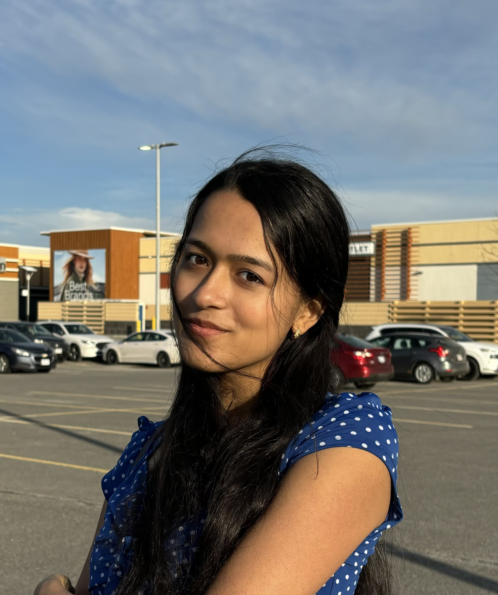

Bollywood dance
A recent solo at my cousin’s wedding, in a room of 300+ people. Parliament was the first big stage; this one still made me nervous in the best way.
Seeking Summer 2028 internships
I study Software Engineering at
Carleton University
.
Over the past few years, I’ve worked across some very different corners of tech,
from data engineering at
Scotiabank
,
to 5G and RAG systems at
 Ericsson
,
to connected-vehicle software at
BlackBerry
.
I’ve realized I just really like understanding how the machine works, whatever the machine happens to be.
Ericsson
,
to connected-vehicle software at
BlackBerry
.
I’ve realized I just really like understanding how the machine works, whatever the machine happens to be.
Lately, I’ve been especially drawn to
medtech
and problems that stop feeling abstract the moment they affect someone you care about. I love building under pressure, chasing problems that do not want to be solved, and taking on things that make me a little nervous before I start.
Outside of tech, I love
Bollywood dancing.
I even got to perform at
Parliament
when I was younger. I’m also a big hiker, and
Angel’s Landing in Zion National Park
is still my favourite hike. If you ever want to talk through a good idea, throw a hard problem my way, or just grab a coffee,
say hi.

Hackathon and research-shaped builds, with photos from Devpost.
Most recent first.
Pick an org on the path. The story sits underneath.
Scroll for more
The rest of the week, when I’m not in a terminal.
A recent solo at my cousin’s wedding, in a room of 300+ people. Parliament was the first big stage; this one still made me nervous in the best way.
Trails whenever I can get them. Angel’s Landing is still the one I talk about.
Intramurals: 1st in
Carleton
’s competitive division.
Adult competitive league.
Open to software, platform, FinTech, ML, and security roles for Summer 2028.